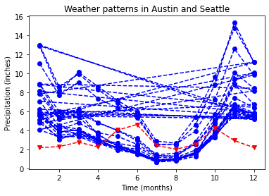
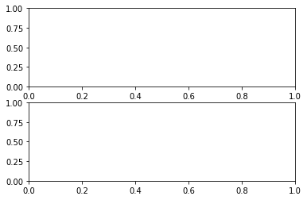

Contents
import matplotlib.pyplot as plt
import pandas as pd
fig 是 container which hold everything you see on the page
ax 是 part of the page that holds data, it is the canvas
adding data to axes
seattle_weather = pd.read_csv("data/seattle_weather.csv")
austin_weather = pd.read_csv("data/austin_weather.csv")
seattle_weather
| STATION | NAME | DATE | MLY-CLDD-BASE45 | MLY-CLDD-BASE50 | MLY-CLDD-BASE55 | MLY-CLDD-BASE57 | MLY-CLDD-BASE60 | MLY-CLDD-BASE70 | MLY-CLDD-BASE72 | ... | MLY-TMIN-AVGNDS-LSTH060 | MLY-TMIN-AVGNDS-LSTH070 | MLY-TMIN-NORMAL | MLY-TMIN-PRBOCC-LSTH016 | MLY-TMIN-PRBOCC-LSTH020 | MLY-TMIN-PRBOCC-LSTH024 | MLY-TMIN-PRBOCC-LSTH028 | MLY-TMIN-PRBOCC-LSTH032 | MLY-TMIN-PRBOCC-LSTH036 | MLY-TMIN-STDDEV | |
|---|---|---|---|---|---|---|---|---|---|---|---|---|---|---|---|---|---|---|---|---|---|
| 0 | USC00456295 | PALMER 3 ESE, WA US | 1 | 13.0 | 1.0 | -7777.0 | 0.0 | 0.0 | 0.0 | 0.0 | ... | 310.0 | 310.0 | 34.0 | 168.0 | 327.0 | 615.0 | 877.0 | 987.0 | 1000.0 | 2.8 |
| 1 | USC00456295 | PALMER 3 ESE, WA US | 2 | 23.0 | 3.0 | -7777.0 | -7777.0 | 0.0 | 0.0 | 0.0 | ... | 280.0 | 280.0 | 33.9 | 132.0 | 275.0 | 515.0 | 800.0 | 963.0 | 1000.0 | 3.1 |
| 2 | USC00456295 | PALMER 3 ESE, WA US | 3 | 50.0 | 11.0 | 1.0 | -7777.0 | -7777.0 | 0.0 | 0.0 | ... | 310.0 | 310.0 | 35.9 | 5.0 | 47.0 | 111.0 | 393.0 | 848.0 | 1000.0 | 2.1 |
| 3 | USC00456295 | PALMER 3 ESE, WA US | 4 | 108.0 | 40.0 | 12.0 | 7.0 | 3.0 | -7777.0 | 0.0 | ... | 300.0 | 300.0 | 38.3 | 0.0 | 0.0 | 5.0 | 123.0 | 571.0 | 978.0 | 2.0 |
| 4 | USC00456295 | PALMER 3 ESE, WA US | 5 | 255.0 | 130.0 | 56.0 | 38.0 | 19.0 | 1.0 | -7777.0 | ... | 310.0 | 310.0 | 43.5 | 0.0 | 0.0 | 0.0 | 0.0 | 83.0 | 610.0 | 2.0 |
| ... | ... | ... | ... | ... | ... | ... | ... | ... | ... | ... | ... | ... | ... | ... | ... | ... | ... | ... | ... | ... | ... |
| 199 | USC00454169 | KENT, WA US | 8 | 673.0 | 518.0 | 363.0 | 301.0 | 209.0 | 17.0 | 8.0 | ... | 261.0 | 310.0 | 55.6 | 0.0 | 0.0 | 0.0 | 0.0 | 0.0 | 0.0 | 1.9 |
| 200 | USC00454169 | KENT, WA US | 9 | 493.0 | 344.0 | 200.0 | 149.0 | 85.0 | 3.0 | 1.0 | ... | 291.0 | 300.0 | 51.0 | 0.0 | 0.0 | 0.0 | 0.0 | 2.0 | 55.0 | 2.0 |
| 201 | USC00454169 | KENT, WA US | 10 | 248.0 | 118.0 | 34.0 | 17.0 | 5.0 | -7777.0 | -7777.0 | ... | 310.0 | 310.0 | 44.7 | 0.0 | 0.0 | 0.0 | 67.0 | 344.0 | 773.0 | 2.3 |
| 202 | USC00454169 | KENT, WA US | 11 | 78.0 | 19.0 | 2.0 | 1.0 | -7777.0 | 0.0 | 0.0 | ... | 300.0 | 300.0 | 39.2 | 34.0 | 103.0 | 273.0 | 597.0 | 912.0 | 998.0 | 3.4 |
| 203 | USC00454169 | KENT, WA US | 12 | 22.0 | 2.0 | -7777.0 | -7777.0 | 0.0 | 0.0 | 0.0 | ... | 310.0 | 310.0 | 34.8 | 147.0 | 324.0 | 648.0 | 937.0 | 999.0 | 1000.0 | 2.4 |
204 rows × 80 columns
# Import the matplotlib.pyplot submodule and name it plt
import matplotlib.pyplot as plt
# Create a Figure and an Axes with plt.subplots
fig, ax = plt.subplots()
# Plot MLY-PRCP-NORMAL from seattle_weather against the MONTH
ax.plot(seattle_weather["DATE"],
seattle_weather["MLY-PRCP-NORMAL"],
color = "b", # blue
marker = "o", # 點的形狀
linestyle = "--" # 線的形狀
)
# Plot MLY-PRCP-NORMAL from austin_weather against MONTH
ax.plot(austin_weather["DATE"],
austin_weather["MLY-PRCP-NORMAL"],
color = "r", # 紅色
marker = "v", # 點的形狀
linestyle = "--" # 線的形狀
)
# Customize the x-axis label
ax.set_xlabel("Time (months)")
# Customize the y-axis label
ax.set_ylabel("Precipitation (inches)")
# Add the title
ax.set_title("Weather patterns in Austin and Seattle")
# Call the show function
plt.show()

fig, ax = plt.subplots(3, 2)

fig, ax = plt.subplots(2,1)
